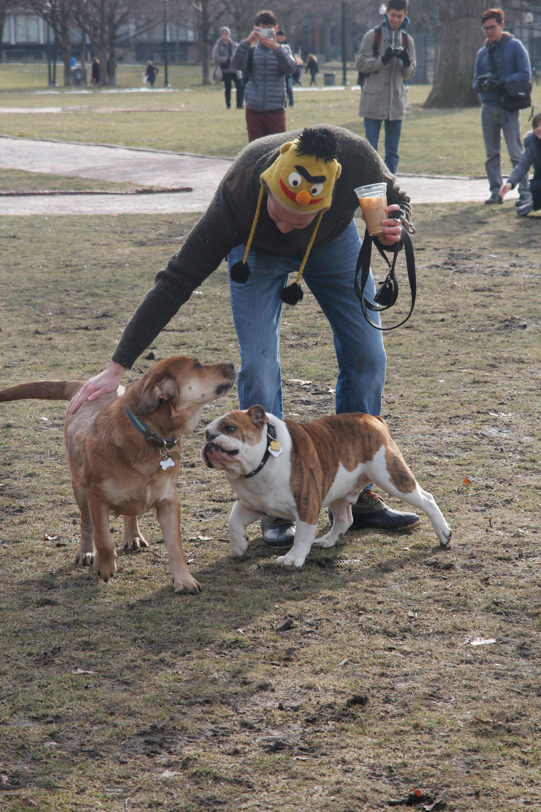
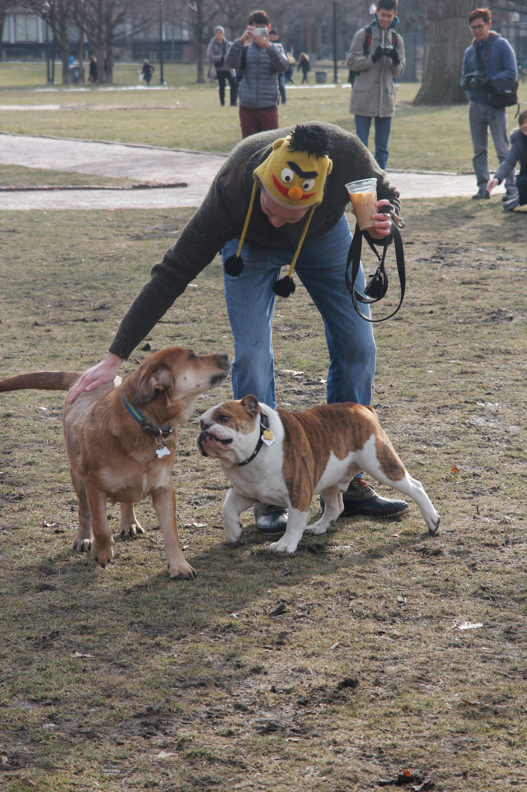

About
As a large central public park in Boston, the Commons is a great place to see a variety of dogs running around the many fields of grass. With plenty of paths, tennis courts, and a hill to overlook the park, you can't help but feel your spirits lifting. During the cold season you could also enjoy ice skating on the frog pond. The park is in walking distance of the Loews movie theatre, the downtown shops and cafes, and the Boston Gardens.
Experiences
On my way to the main area of Boston Common I entered the gardens and started to make my way around the duck pond. I instantly saw multiple people walking their dogs along the path or in the grass. After sitting on a bench for a short while I saw a small white fluffy dog excitedly chasing squirrels up the trees. I also got to pet a Golden Retriever sprawled out in the grass. When I arrived to the main green space of the commons, I saw two dogs racing around trying to fetch a stick before the other. I sat on a bench again and just watch people travel through the park as I laughed at the dogs running and jumping in the dirt.
- Tiana
Photos
 


Want to add your experience or photos? Hop over to our Submit Page and send us a message!